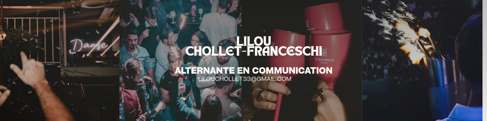
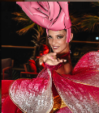
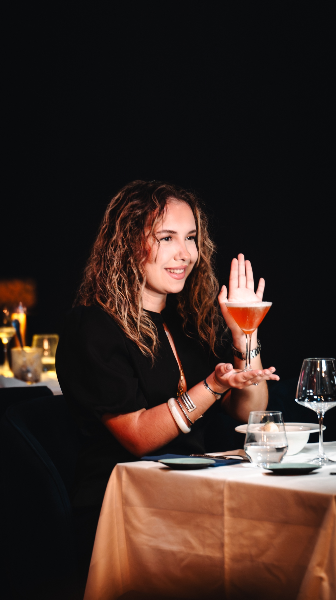

JE VEUX LE FAIRE VIVRE AUX AUTRES.
- 01Légèreté et liberté
- 02Je lâche prise, j’oublie le quotidien
- 03Je profite du moment présent
- 04Le partage : copines, rire, danser, souvenirs
Communication, image, événements : j’aime faire vivre les idées.
J’ai obtenu mon DUT Techniques de Commercialisation à l’Université de Bordeaux, avec une spécialité en business.
Je suis aujourd’hui en troisième année de Bachelor à l’INSEEC, avec une spécialité en communication. En alternance, je crée des contenus et j’accompagne l’organisation d’événements pour trois établissements bordelais.
MON PARCOURS ↗
BANNIÈRE LINKEDIN · COMMUNICATION & ÉVÉNEMENTIEL ↗MES PASSIONS
La danse fait partie de mes passions et de ma façon de m’exprimer. Sur scène, j’aime l’énergie du groupe, le mouvement et le lien qui se crée avec le public. Les spectacles m’ont appris à m’investir dans une création collective et à faire attention à chaque détail qui donne vie à un moment.
Cette expérience nourrit aussi mon regard sur l’événementiel : je suis sensible à la musique, à l’ambiance, aux lumières et à la manière dont les personnes vivent une soirée. Ces photographies sont tirées de mon oral sur la fête.



LIBERTÉ · PARTAGE · CRÉATIVITÉ
La fête m’apporte de la légèreté et de la liberté. Je lâche prise, j’oublie le quotidien et je profite du moment présent. J’aime le partage avec mes copines : rire, danser et créer des souvenirs.
Mais mon intérêt ne s’arrête pas à la soirée. Je regarde aussi ce qui la prépare : les tenues et la musique, l’ambiance d’un lieu, sa décoration, son accueil et son service. J’observe, je m’inspire, et ça nourrit mon alternance et mon futur projet.
J’observe, je m’inspire, et cela nourrit mon alternance et mon futur projet.
Ces univers m’attirent par leur créativité et leur sens de l’accueil. Ils se rejoignent dans ce que j’aime : imaginer une ambiance, rencontrer des personnes et construire une expérience autour de la musique et de l’événementiel.
Pendant deux ans, j’ai préparé le Gala TC avec onze autres étudiants et participé à un projet doté d’un budget de 10 000 €. J’y ai découvert la coordination, la décoration, les prestataires, le travail d’équipe et l’accueil des invités. Rencontres, cultures et musiques : j’aime créer des liens à travers une soirée.
DÉCOUVRIR LE GALA TC ↗Au Bourbon, à La Solera et au Zéphyr, je découvre les lieux, les équipes, les prestataires et l’expérience client. Je participe à imaginer des rendez-vous, à préparer les contenus et à donner une identité à chaque moment.
DÉCOUVRIR MON ALTERNANCE ↗Pour préparer les soirées, j’ai participé à la décoration, à la recherche de DJ, aux échanges avec les prestataires et à la préparation des animations.
J’ai pu découvrir Nebat Drums, percussionniste sur la scène d’Ibiza, Tony Vegas, DJ à L’Arc Paris, et les danseuses présentes chaque semaine. Leur énergie et leur travail m’inspirent.
« Je ne veux pas seulement profiter de la fête, je veux créer des endroits où les autres peuvent, eux aussi, la vivre. »
Cette passion se prolonge dans mon projet de restaurant festif à Bordeaux, au sein de mon alternance.